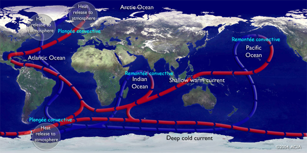

Le Cœur Humain et la Circulation Thermohaline
Deux moteurs essentiels à la vie et au climat mondial
1. La Pompe et les Flux
Le cœur agit comme une pompe qui propulse le sang dans un réseau de vaisseaux, tout comme les différences de densité et de température font circuler l’eau dans les océans. Ces cycles constants sont essentiels :
- Circulation sanguine : alimente les organes en oxygène et nutriments.
- Circulation thermohaline : redistribue la chaleur et influence le climat.
2. Les Mécanismes de Propulsion
Cœur humain : La contraction rythmique du muscle cardiaque génère une pression pour propulser le sang.
Circulation thermohaline : Les variations de densité de l'eau, causées par la température (thermo) et la salinité (haline), créent des courants océaniques puissants.
Ce schéma montre la circulation thermohaline, souvent appelée tapis roulant océanique, qui relie les eaux froides profondes des pôles aux eaux chaudes de surface des tropiques.
3. Cycle Global
Corps : Le sang fait un circuit complet entre le cœur, les poumons et les organes.
Océan : Le "tapis roulant océanique" relie les eaux profondes froides des pôles aux eaux chaudes des tropiques. Ce cycle prend entre 1 000 et 1 600 ans pour s'accomplir.
4. Importance pour la Santé Globale
Le cœur : Maintient l'homéostasie du corps en transportant hormones, nutriments et gaz.
La circulation thermohaline : Influence la biodiversité marine, les nutriments et la régulation climatique mondiale.
Niveau 2 : Premières Crises
Objectif : Réagir rapidement aux premières crises.

État des océans et impact sur le cœur
Contrôlez la température des océans pour maintenir l'équilibre.
Effets :
- Température basse : Réduction des courants océaniques, impact sur l'écosystème.
- Température normale : Fonctionnement optimal des systèmes.
- Température élevée : Perturbation des courants, stress thermique sur le cœur.
Contrôlez la température pour éviter une crise.
Gestion des Crises
Les premières crises incluent :
- Hypertension légère
- Fonte des glaces polaires
Utilisez les outils de gestion pour atténuer ces effets :
- Barrières thermiques : Limiter les variations de température des océans.
- Ajustements des valves : Optimiser le débit sanguin pour stabiliser la pression.